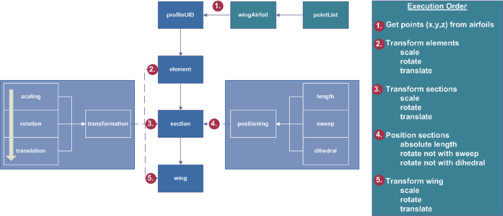

complexType · extension complexBaseType · all
Wing type, containing all a lifting surface (wing, HTP, VTP, canard...) of an aircraft model.
A lifting surface (wing, HTP, VTP, canard...) of an aircraft model.
Position of the wing: The position of the wing is defined using the transformation parameters. Using those parameters, the wing coordinate system is translated, rotated and scaled.
Definition of the wings outer shape: The outer shape of the wing is defined by airfoils that are placed within the 3D space. Two airfoils are combined to one wing segment within the segments. For the definition of the positions of the airfoils, different sections are defined. Within each section one or more elements are defined. The airfoil shape is defined within the elements. If the wings outer shape should e.g. have a step it is possible to define two different airfoils in one section by using two elements. In most cases each section will only include one element. Positionings are vectors that are used for an additional translation of the sections by using 'user friendly paramaters' as e.g. sweep and dihedral. Please note, the first positioning may be non-zero. Often it will be zero just to locate the wing at the position stated by the translation, but this is not necessary. Finally the wing segments are defined by combining two consecutive elements. A more detailed description is given within the different parameters.
Definition of control surfaces, wing structures, wing fuel tank and wing fuselage attachment: those parts are defined within componentSegments. Please refer to the documentation there.

| Name | Type | Constraints | Use | Default | Description |
|---|---|---|---|---|---|
@externalDataDirectory | xsd:string | optional | Directory of the external data file | ||
@externalDataNodePath | xsd:string | optional | Path of the node inside the external data file | ||
@externalFileName | xsd:string | optional | Name of the external data file | ||
@loftContinuity | loftContinuityType | 2 values | optional | Continuity used for lofting this component (default: C2 for fuselages and ducts, C0 for wings) | |
@symmetry | symmetryXyXzYzType | 5 values | optional | Symmetry plane the component is mirrored at | |
@uID | xsd:ID | required | UID |
| Name | Type | Constraints | OccurrenceHow often the element may appear at this place. The schema writes it as minOccurs and maxOccurs on the declaration. | Default | Description |
|---|---|---|---|---|---|
| allThe children below may appear in any order. Each may appear at most once. | |||||
name | stringBaseType | [1..1] required | Name | ||
description | stringBaseType | [0..1] optional | Description | ||
parentUID | stringUIDBaseType | [0..1] optional | UID of part to which the wing is mounted (if any). The parent of the wing can e.g. be the fuselage. In each aircraft model, there is exactly one part without a parent part (The root of the connection hierarchy). | ||
transformation | transformationType | [1..1] required | Position and orientation | ||
sections | wingSectionsType | [1..1] required | Sections | ||
positionings | positioningsType | [0..1] optional | Positionings of the wing sections | ||
segments | wingSegmentsType | [1..1] required | Segments | ||
componentSegments | componentSegmentsType | [0..1] optional | ComponentSegments | ||
cpacs/vehicles/aircraft/model/wings/wingcpacs/vehicles/rotorcraft/model/wings/wingcpacs/vehicles/rotorcraft/model/rotorBlades/rotorBlade| Type | Name |
|---|---|
rotorBladesType | rotorBlade |
wingsType | wing |